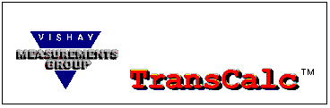

Getting Started How TransCalc works.
Getting Started How TransCalc works.
Help System & Technical Reference
Prior knowledge of transducer design and construction is assumed for anyone using this program. As a minimum, we suggest reading Strain Gage Based Transducers, Their Design and Construction.
Index
Introduction
Getting Started How TransCalc works.
Menu Commands
File Create, display, and save projects.
Functions Verify designs and refine circuits.
Design Verification Strain and bridge output.
Circuit Refinements Zero and span.
Technical Assistance
Strain Gage Based Transducers Topical Index of selected topics.
Technical Assistance Literature and Applications Engineering Support
Auxiliary Programs
Configuration Choose US Customary or SI units.
Wire Table Calculate length or resistance.
Resistance Ratios Calculate resistance ratios for span shift compensation.
Bridge Output For various gage configurations.
Please Note
TransCalc is intended to help in the design verification and circuit refinement of prototype transducers. Such prototypes should be thoroughly tested to ensure desired performance prior to entering volume transducer manufacturing. The Measurements Group and its representatives disclaim any responsibility for final transducer performance.